- Resumen de procesos de:
- Cambios en el tamaño de la población
| Año 1 | Año 2 | Año 3 | Año 4 | Año 5 |
|---|---|---|---|---|
| 200 | 230 | 198 | 235 | 220 |
El crecimiento denso-independiente postula que la tasa de incremento per capita no tiene dependencia estadística del tamaño de la población.
el número de observaciones y el rango de la variable predictora
Veamos a que nos referimos
Dos modelos son la base de este tipo de crecimiento, estos modelos asumen que el tamaño de la población no ejerce efecto en el crecimiento, pero se diferencian en como estas poblaciones crecen.
El crecimiento de mariposas
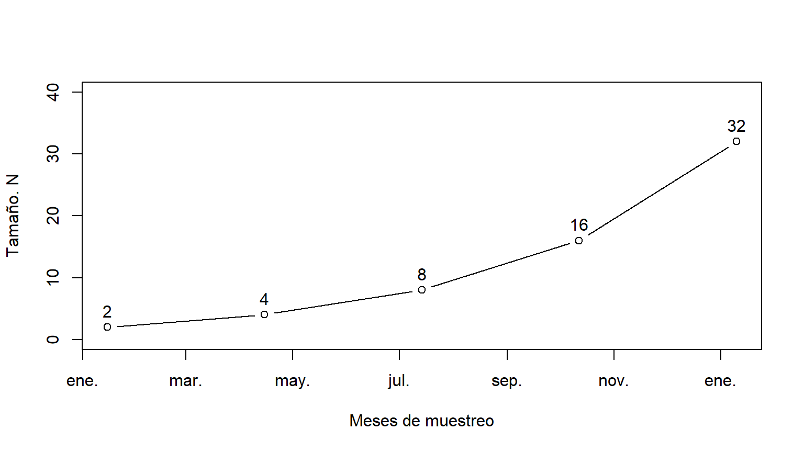
La tasa de crecimiento de una población es una medida de la velocidad con la que cambia el tamaño de la población. Esta velocidad se mide en individuos por unidad de tiempo.
La tasa de crecimiento de una población resulta de la suma de los ingresos (nacimientos e inmigraciones) menos la suma de los egresos (muertes y emigraciones) de individuos que ocurren en una unidad de tiempo.
(N+I) − (M+E)
Es muy dificil obtener los cuatro parámetros entonces podemos usar una medida de resumenla tasa de incremento per capita
Para obtener la tasa de incremento usamos:
tasa = (Nt + 1/Nt)
```r
tasa <- N[2:5]/N[1:4]
tasa
```
```
## [1] 2 2 2 2
```Como vemos, nuestra tasa de incremento no varía a lo largo del periodo de muestreo
Ahora podemos usar la tasa de incremento para saber el tamaño de la población.
La tasa de incremento que obtuvimos implica que la población se duplica cada año, esta aseveración la podríamos marcar como:
Nabril = 2 * Nenero
Nabril/Nenero = 2
Podemos generalizar esta formula como: Nt + 1 = λ * Nt
La tasa de incremento como: Nt + 1/Nt = λ
Ahora podemos utilizar la fórmula que derivamos para proyectar la población. Veamos la proyección de la población por cada periodo, en el caso del ejemplo de las mariposas cada 3 meses.
Nabril = 2 * Nenero
Njulio = 2 * Nabril = 2 * (2*Nenero)
Noctubre = 2 * Njulio = 2 * (2*Nabril) = 2 * (2*(2*Nenero))
Si el ciclo de las mariposas es es 3 meses, proyecte el tamaño de la población a tres años. La población inicial es de 2 individuos.
# hacemos una función para calcular el tamaño de la población
crec <- function(lambda, t, N){
N <- lambda^t * N
return(N)
}
crec(2,12,2)## [1] 8192Nuestra población de mariposas se está duplicando en cada periodo, la magnitud del crecimiento es cada vez mayor, crece de una forma geométrica.
La magnitud del incremento es diferente dependiendo del tamaño de la población inicial.
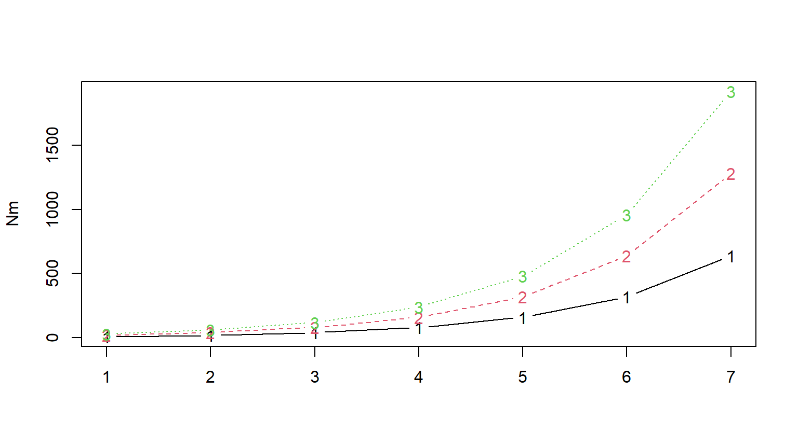
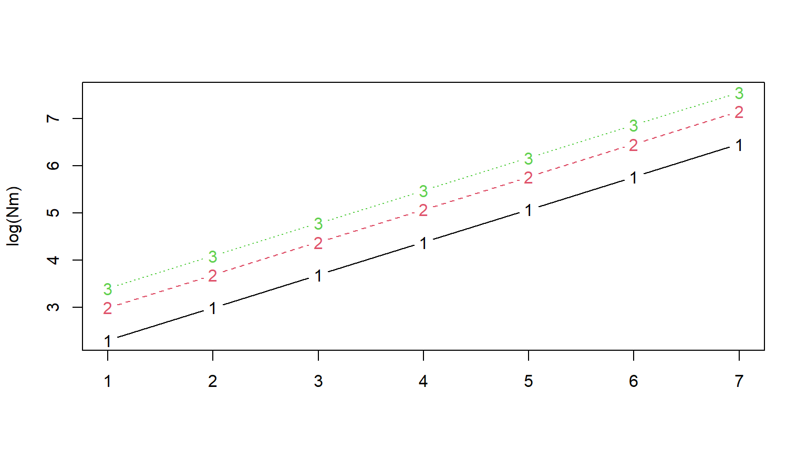
El crecimiento realmente es paralelo, las tres poblaciones están creciendo a una tasa similar. Aunque cambia el intercepto (donde inicia la población) los cambios son lineales en las tres poblaciones.
Lambda actúa directamente sobre la población, por lo que los cambios en la tasa per capita tienen un fuerte efecto sobre el crecimiento.
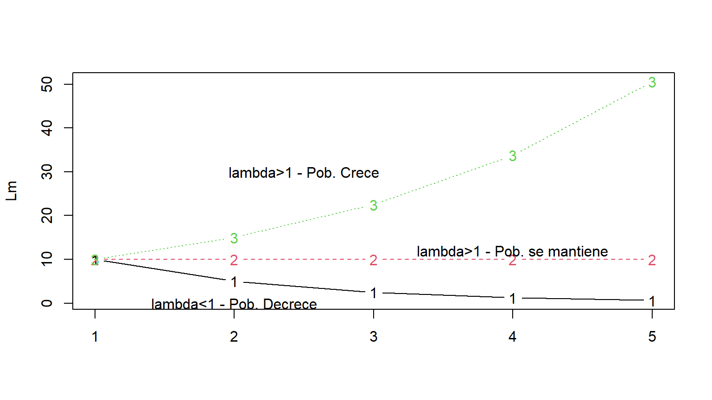
100, 50,75
¿Cómo obtenemos la tasa de incremento?
#Nuestros datos
ninfalidos <- c(100, 50, 75)
#obtengamos lambda
ninL <- ninfalidos[2:3]/ninfalidos[1:2]
ninL## [1] 0.5 1.5¿Qué valor uso para construir mi modelo?
Podemos usar el valor medio de los diferentes periodos.
## [1] 1#usamos nuestra función para calcular el crecimiento
crec(lambda = xL, t = 3,N = 100); ninfalidos[3]## [1] 100## [1] 75¿El modelo es efectivo? ¿Predice adecuadamente el tamaño de la población?
Una medida que se ajusta mejor es la media geométrica.
## [1] 0.9085603## [1] 75## [1] 75¿El modelo es efectivo? ¿Predice adecuadamente el tamaño de la población?
Resolver el ejercicio 1
El modelo geométrico propone el crecimiento de la población como una serie de eventos reproductivos, así cada ciclo la población se reproduce en un único evento.
¿Realmente las poblaciones crecen a saltos?
Imaginemos que ponemos en una caja petri 1000 individuos de E. coli y al siguiente día tenemos 1010 bacterias
¿Cuál sería el lambda?
λ = 107 por día.
Pero, las bacterias están reproduciéndose continuamente y de forma asíncrona.
Jacob Bernulli (1654), se dio cuenta que el crecimiento geométrico depende de la periodicidad que asumimos ocurren los ciclos reproductivos.
Con un λ = 1.5(anual)
¿En qué proporción crece la población?
Efectivamente en 50% o 0.5
1 la renovación de la población
0.5 el crecimiento de la población
Si la reproducción es en dos momentos, entonces la tasa de incremento discreto rd debería ser dividida para 2 elevada a 2 (número de ciclos).
N1 = N0(1+0.5)
N1 = N0(1+05/2)2
Podríamos generalizar como:
Nt + 1 = Nt0(1 + rd/n)n
Nt + 1/Nt0 = (1 + rd/n)n
n <- 1:100 #entre 1 y 100 periodos en el año
N0 <- 1 #población inicial de 1
rd <- 1 #tasa de incremento discreto
#Calculamos el tamaño de la población
N1 <- N0 * (1 + rd/n)^n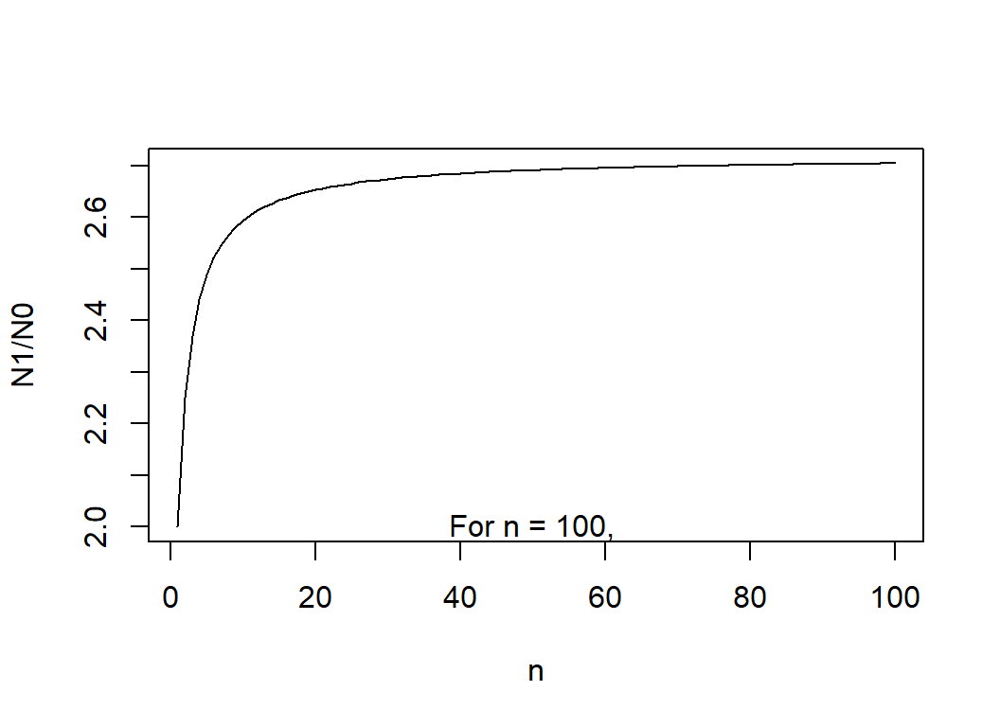
Como vemos cuando incrementamos el número de eventos reproductivos llegamos a una constante que es 2.718.
El crecimiento exponencial es:
Nt = N0ert en este caso r es la tasa intrínseca de crecimiento.
Veamos como podemos ajustar un modelo de crecimiento exponencial continuo.
mariposas <- c(10, 25, 89, 160, 312)
#obtenemos lambda
lamM <- mariposas[2:5]/mariposas[1:4]
#convertimos lambda en r (tasa intrinseca)
rM <- log(lamM)
lamM; rM## [1] 2.500000 3.560000 1.797753 1.950000## [1] 0.9162907 1.2697605 0.5865374 0.6678294## [1] 0.1139348##Hacemos una función de crecimiento exponencial
crecE <- function(N0,r,t ){
N <- N0*exp(r*t)
return(N)}
#proyectamos la población
marCrecE <- crecE(N0=15, r = rMx, t = 1:50)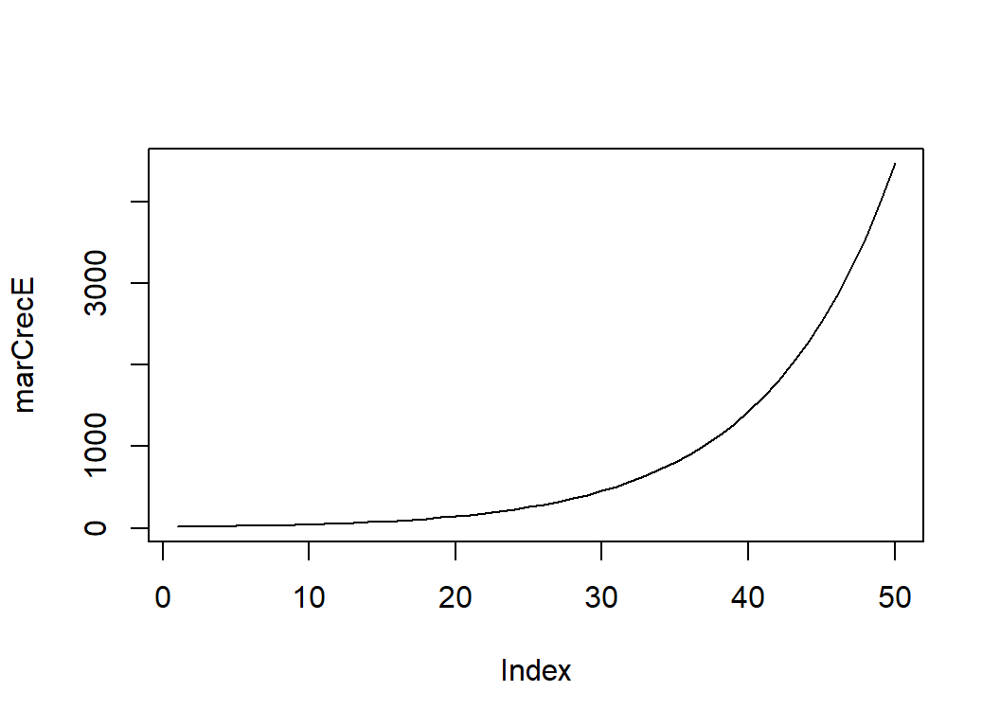
Si r > 0 la población aumenta
Si r < 0 la población se reduce
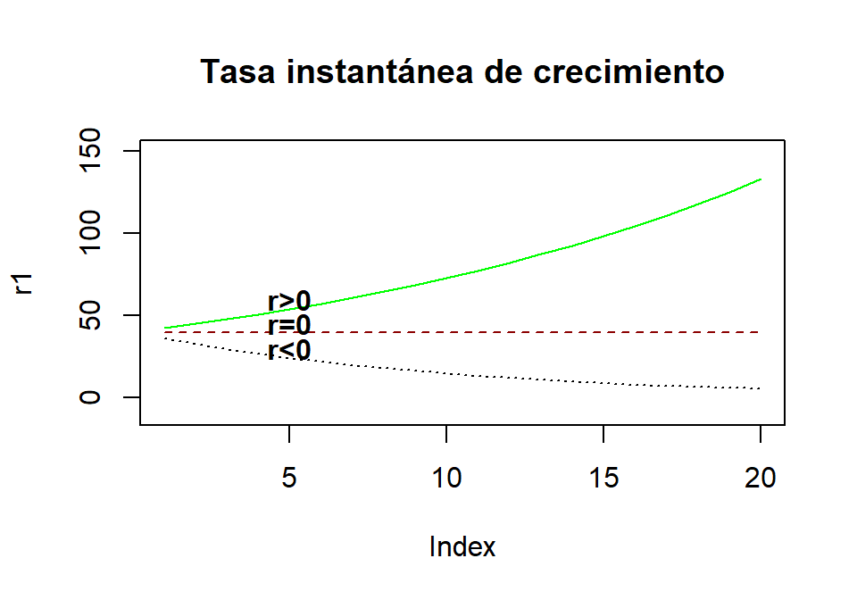
Hasta ahora hemos trabajado con modelos deterministas, usando una tasa de incremento promedio. Otra aproximación es simular la dinámica de la población con alguna cuantificación de incertidumbre.
Podríamos utilizar la variación de la tasa de incremento como una medida aleatoria y proyectar la población.
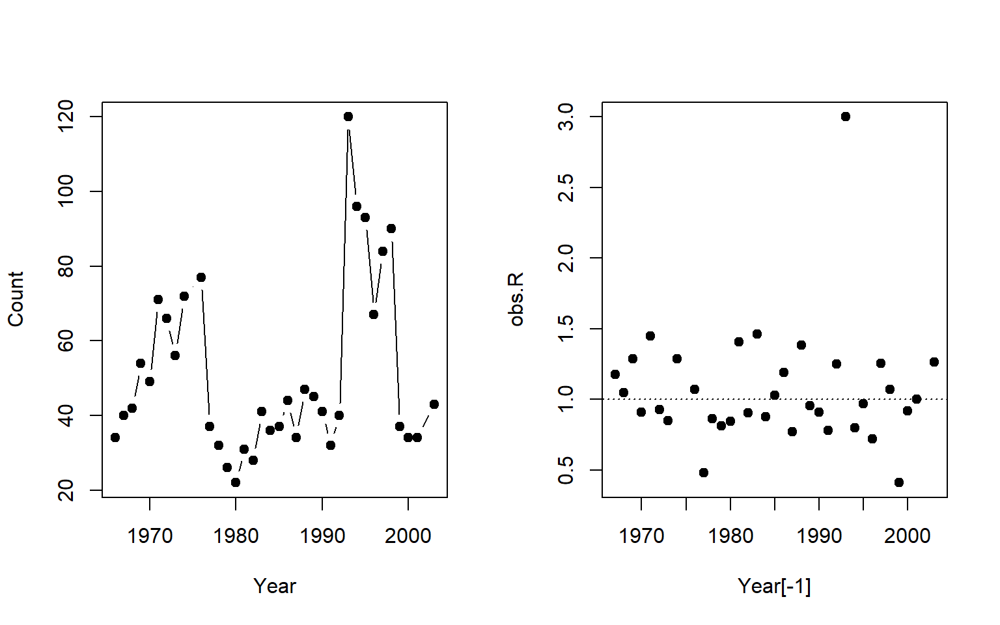
¿Qué pasa con la tasa de crecimiento?
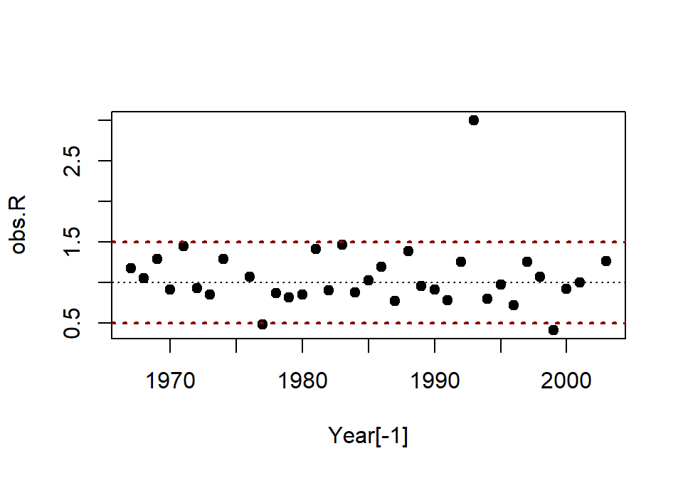
Lambda varía entre 1.5 y 0.5.
Podemos utilizar esta variación para construir nuestra simulación
Simularemos el crecimiento de la población a 50 años, pero no utilizaremos una media geométrica de lambda.
## [1] 1.0500000 3.0000000 1.4642857 0.8000000 1.4489796 1.4489796 0.9687500
## [8] 1.0000000 1.2857143 0.8000000 1.0277778 1.0277778 3.0000000 0.8461538
## [15] 0.9074074 0.7804878 1.2857143 1.2537313 1.0000000 1.4090909 0.8484848
## [22] 3.0000000 0.4111111 0.7727273 0.7727273 1.1891892 0.7727273 0.9074074
## [29] 0.8461538 0.8461538 0.8000000 0.9111111 0.8484848 0.8000000 0.8461538
## [36] 0.7727273 0.8000000 1.4489796 1.1891892 1.0277778 1.3823529 0.7804878
## [43] 0.8461538 0.4111111 0.7804878 1.0694444 0.9687500 0.9032258 0.8484848
## [50] 1.4090909Ahora tenemos nuestra tasa de incremento aleatoria para cada año.
Generamos un vector vacío para poder poner nuestra predicción.
Ahora podemos graficar la población simulada
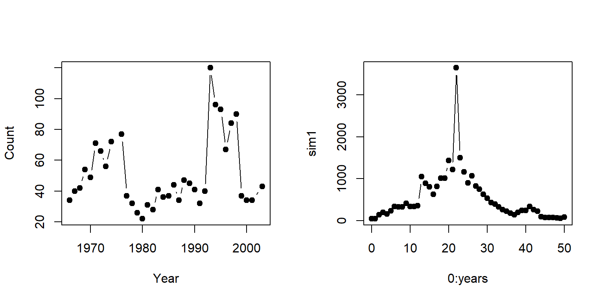 Hay diferencias entre el modelo y los datos.
Tenemos una población simulada, sin embargo, cada que ejecutamos la función tenemos nuevos datos, para que podamos obtener información de esta simulación debemos generar múltiples corridas.
PopSim <- function(Rs, N0, years = 50, sims = 10) {
sim.RM = matrix(sample(Rs, size = sims * years, replace = TRUE),
nrow = years, ncol = sims)
output <- numeric(years + 1)
output[1] <- N0
outmat <- sapply(1:sims, function(i) {
for (t in 1:years) output[t + 1] <- round(output[t] *
sim.RM[t, i], 0)
output
})
return(outmat)
}Ahora, podemos simular la población y solo debemos incluir los datos de lambda (obs.R), el tamaño inicial de la población (N0) y la cantidad de simulaciones.
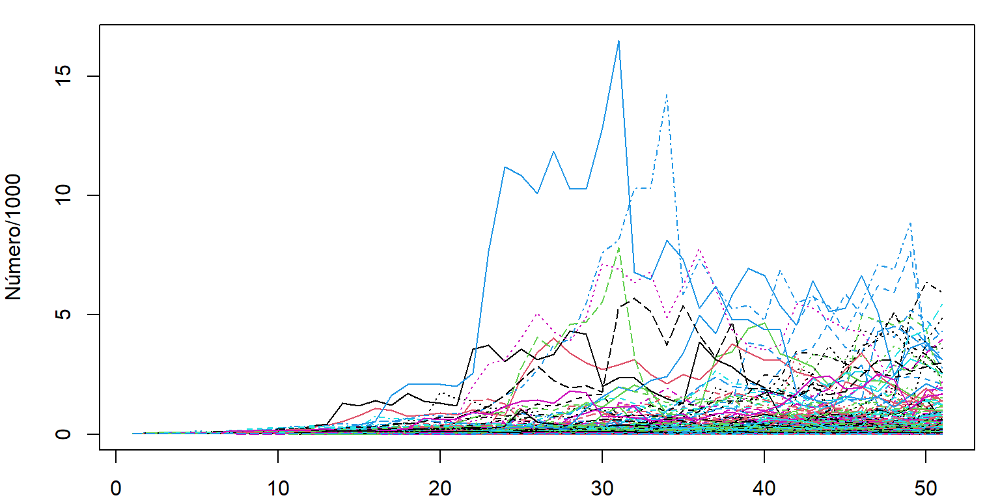
## [1] 51 1000Extraemos el tamaño de la población en el último año (2053), para poder analizar la proyección generada de la población.
## Min. 1st Qu. Median Mean 3rd Qu. Max.
## 0.0 3.0 17.0 170.9 82.0 5936.0Grafiquemos los datos y veamos su distribución. Adicionamos los límites de un intervalo de confianza del 95%.
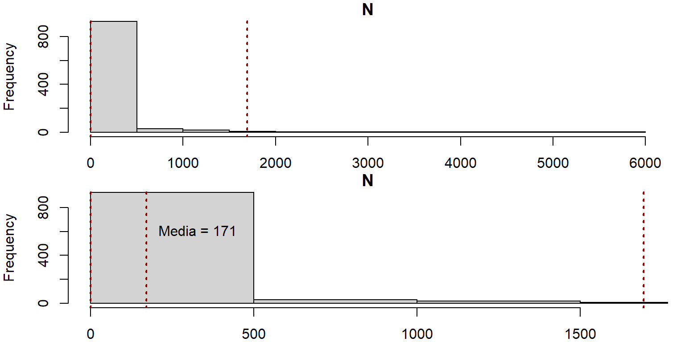
Con los datos obtenidos podríamos calcular la probabilidad de extinción de la especie.
## La probabilidad de extinción es: 11.9